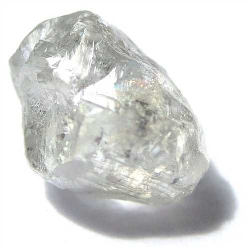
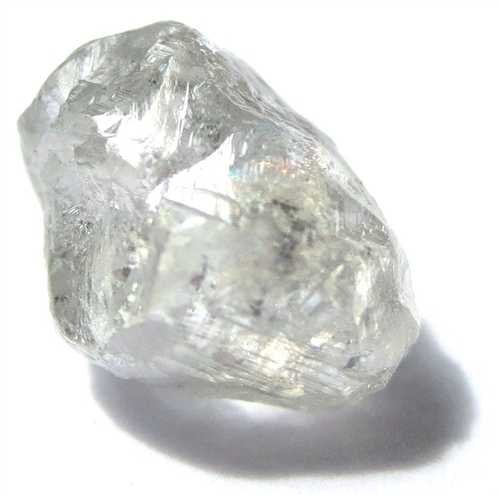

ONYX
Onyx is a banded variety of the oxide mineral chalcedony. Agate and onyx are both varieties of layered chalcedony that differ only in the form of the bands: agate has curved bands and onyx has parallel bands. The colours of its bands range from white to almost every colour (save some shades, such as purple or blue). Commonly, specimens of onyx contain bands of black and/or white. Black onyx is perhaps the most famous variety, but is not as common as onyx with colored bands. Artificial treatments have been used since ancient times to produce both the black color in "black onyx" and the reds and yellows in sardonyx. Most "black onyx" on the market is artificially colored.
Onyx is found in various regions of the world including Yemen, Uruguay, Argentina, Australia, Brazil, Canada, China, Czech Republic, Germany, India, Indonesia, Pakistan, Madagascar, Latin America, the UK, and various states in the US. It has a long history of use for hardstone carving and jewelry, where it is usually cut as a cabochon or into beads. It has also been used for intaglio and hardstone cameo engraved gems, where the bands make the image contrast with the ground. Some onyx is natural but much of the material in commerce is produced by the staining of agate.
 


KNOWN ASSOCIATES
Onyx appears most frequently with emeralds and diamonds in a platinum setting in items in this collection. It also appears with fire opal and coral.


SEEN IN
While onyx can be a rare find in jewelry today, it appears in six items from this collection.